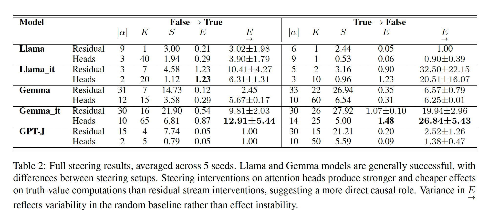
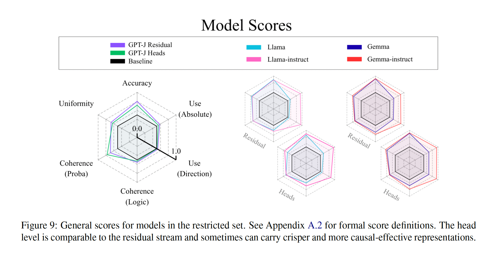
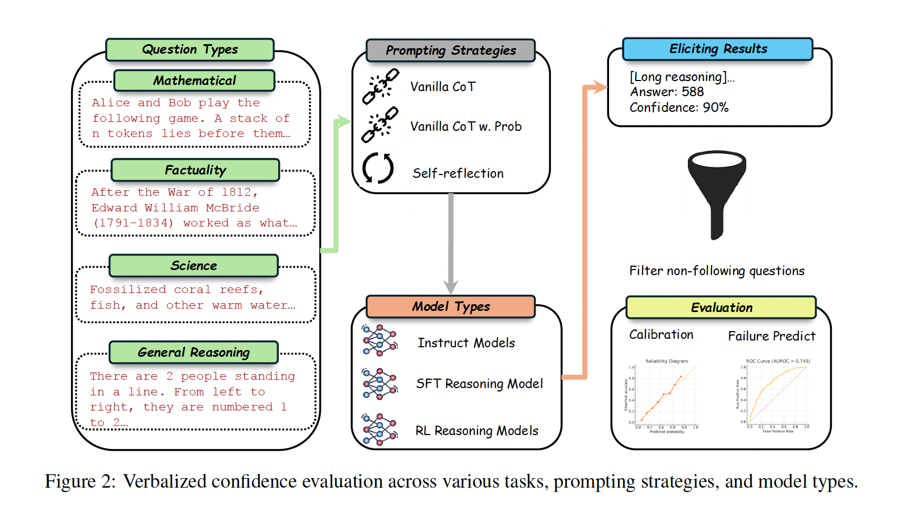
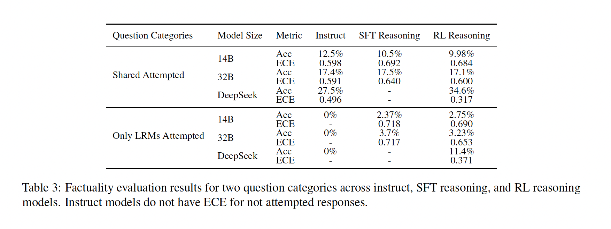

まず問いを分ける
同じ “Paris is in France” についても、少なくとも次の6種類は別の問いである。
| 概念 | 問い | Paris の例 |
|---|---|---|
| 事実 / 真偽 | 外部の基準では真か？ | 正解データ上では “Paris is in France.” は真 |
| 内部に表された情報 | その情報が内部に表象されているか？ | Paris → France に対応する情報を活性値から読み出せる |
| 信念に類する状態 | モデルはそれを真として扱っているか？ | Paris が France にあることを、真であるものとして判断する |
| 背景前提 / 推論での役割 | それを明示せず、他の推論の前提として利用するか？ | 「Louvre は Paris にある」から「Louvre は France にある」と推論する際に Paris → France を前提として使う |
| 確信度 / メタ認知 | 自分の判断が正しいと、どれくらい見積もるか？ | 「Paris は France にある」という自分の判断に 90% の確信を示す |
| 主張 / 言語出力 | 実際に何を外部へ表出するか？ | “Paris is in France.” と生成する |
真偽 ≠ 内部表象 ≠ 信念らしさ ≠ 確信度 ≠ 出力
2本の論文
2本は地図の別々の場所を扱う
| 対象 ↓ / 現れ方 → | 内部表象 | 外部への表出・出力 |
|---|---|---|
| 事実についての情報 | Beliefs: Accuracy — 外部の真偽ラベルと対応する情報を読み出す | Thinking Out Loud — 事実性タスクでの正答・誤答 / I don't know |
| 信念に類するもの | Beliefs: Coherence / Uniformity — 信念らしい整合性・領域をまたぐ一般性 | Beliefs: Use — 内部介入による真偽判断の変化 |
| 確信・メタ認知 | — | Thinking Out Loud — 言語化された確信度 / 較正 |
同じ「知っている」に見えるものでも、内部に表現される情報、真として扱う状態、外に出る回答や確信度は別の観測対象である。今回の焦点は、内部状態が回答・言語化された確信度・棄権としてどの程度忠実に表出されるかにある。
論文1
LLM Beliefs Are in Their Heads
内部から読み出せる真偽に敏感な表象があるとして、それを信念に類する状態と呼ぶには何を追加で確かめるべきかを問う。
強い点
真偽に敏感な中間表現が、大きめの Llama / Gemma 系モデルでかなり高精度に読める。さらに、見つけた方向へ活性値を動かすと真 / 偽の出力も変わるため、単なる相関特徴ではなく計算に使われている可能性がある。
注目点
残差ストリーム全体だけでなく、一部の注意ヘッド出力にも真偽信号が局所的に現れる。ヘッド単位の信号は場所が限られるぶん、内部介入したときに小さい介入でも出力へ効きやすい。
弱い点
Accuracy と Use は強いが、Coherence は中程度に留まる。特に否定や論理的な言い換えでは崩れやすく、真偽に敏感な表象をそのまま安定した「信念」と読むには慎重さが必要になる。
論文1 / 用語
4基準は「信念らしさ」の別々の条件
この論文の Accuracy / Use / Coherence / Uniformity は、通常のモデル評価指標というより、内部表現が信念らしいと言えるための条件として使われている。日本語では次のように読むと説明しやすい。
| 英語 | 日本語での読み | 何を問うか | 実験での見方 |
|---|---|---|---|
| Accuracy | 真偽分離性 / 分離精度「読めるか」 | 内部表現が真の入力と偽の入力を分けているか。 | 最終トークン位置の内部ベクトルや注意ヘッドの出力から、ロジスティック回帰で真偽を当てる。 |
| Use | 機能的使用 / 出力への関与 「使われて | いるか」 読める真偽信号が、実際にモデルの出力計算に使われているか。 | 真偽を分ける方向へ内部ベクトルを少し動かし、真 / 偽の出力確率が変わるかを見る。 |
| Coherence | 整合性「矛盾しないか」 | p, not-p, p and q, p or q などの論理関係に対して一貫するか。 | 否定・言い換え・連言・選言で真偽判定が崩れないか、疑似確率が基本的な確率制約を満たすかを見る。 |
| Uniformity | ドメイン一貫性「別領域にも通用するか | 」 都市・企業・数比較・翻訳など、異なる領域でも同じような真偽方向が使えるか。 ある領域 | で作った真偽判定の手がかりが、別領域の真偽文にも通用するかを見る。 |
Transformer 補足 1
残差ストリームは、層をまたぐ共有の通路
ある1つの層の出力時点で見る残差ストリームの形は 入力トークン数 x d_model。 d_model はトークン埋め込みの次元数で、それらが層ごとに保存されるので全体ではさらに x 層数
- 読む
注意機構と MLP は、その時点の残差ストリームを入力として使う。 - 足す
計算結果は上書きではなく、基本的に残差ストリームへ加算される。 - 形
1層では入力トークン数 x d_model。全層を保存すると層数 x 入力トークン数 x d_model。
Transformer 補足 2
注意ヘッドは「どこを見るか」と「何を書くか」を分けて考える
- QK
問い合わせベクトルと鍵ベクトルの内積から注意パターンを作る部分。書き込み先トークンが、どの参照元トークンをどれくらい見るかを決める。 - OV
参照元トークンの情報を値ベクトルとして取り出し、書き込み用のベクトルに変換する部分。QK が作った重みと合わせて、何を残差ストリームに足すかを決める。 - ヘッド単位
この論文の probe は QK/OV を個別に分解せず、注意ヘッドが最終的に書き込むヘッド出力全体を見る。つまり「このヘッドの更新に真偽情報が含まれるか」を調べる。
5.1 Accuracy
Accuracy は、内部ベクトルから真偽ラベルを読めるか
- LLM 入力
文だけ。真 / 偽はプロンプトに入れない。 - 読み出し器の学習
取り出した活性値に、外部の正解ラベルを対応づける。 - 意味
内部表現に真偽に敏感な方向があるかの最低条件チェック。
5.1 Accuracy / Dataset
約1.3万文の真偽文から活性値を集める
Accuracy 実験では Samuel Marks and Max Tegmark (2024), The Geometry of Truth の真偽データセットを使う。文だけを LLM に入力し、最終トークン位置の残差ストリーム / ヘッド出力を取り出す。真偽ラベルは後から線形の読み出し器を学習するために使う。
| 領域 | 文数 | 例文 | ラベル |
|---|---|---|---|
| Cities | 1,496 | The city of Hangzhou is in China. | True |
| Common Claims | 4,450 | Wild monkeys groom each other’s hair as a social activity. | True |
| Companies | 1,200 | Barclays has headquarters in Russia. | False |
| Larger | 1,980 | Fifty-six is larger than fifty-three. | True |
| Smaller | 1,980 | Sixty-five is smaller than eighty-seven. | True |
| Sp_En_Trans | 354 | The Spanish word ‘madre’ means ‘mother’. | True |
| Counterfact | 2,000 | Klemens von Metternich’s profession is an actor. | False |
合計は約13,460文。Accuracy では半分を Use 実験用に予約し、残り半分で読み出し器を訓練・評価する。1文につき、各層の最終トークン残差ベクトルと、各層・各ヘッドの最終トークン出力を読む。
5.1 Accuracy / Results
Llama / Gemma 系では真偽を高精度に読める
層やヘッドの強さは、読み出し器の重みの大きさではなく、その層 / ヘッドの活性値だけで真偽を分類したテスト精度で見る。本文では残差ストリームの上位3読み出し精度と、ヘッド単位の傾向が報告されている。
下の「ヘッド」列は、複数ヘッド全体を結合した分類器ではない。各層 / ヘッドを個別に読み出し、成績の高い上位5個を平均した探索的な集約である。ヘッド位置を別データで事前固定してから評価したスコアではないので、モデル全体の汎化性能としては強めに出る。
| モデル | 本文での残差読み出し精度 解釈 | |
|---|---|---|
| GPT-2 Large | 0.567 | ほぼ偶然水準に近く、真偽に敏感な符号化は弱い。 |
| Yi | 0.630 | 読めるが弱い。 |
| Pythia | 0.721 | 中程度に読める。 |
| Llama | 0.889 | 高精度に読める。 |
| Gemma | 0.920 | 非常に高精度に読める。 |
| モデル | 残差 | ヘッド | 補足 |
|---|---|---|---|
| GPT-J | 0.799 | 0.718 | 上位5活性値の平均。以後の実験では基準線として扱われる。 |
| Llama | 0.895 | 0.857 | 残差ストリームからも強く読める。 |
| Llama Instruct | 0.882 | 0.899 | 指示調整後もヘッド単位の信号が強い。 |
| Gemma | 0.916 | 0.911 | 残差 / ヘッドがほぼ同程度。 |
| Gemma Instruct | 0.923 | 0.925 | ヘッド単位でも非常に高い。 |
残差ストリーム全体からも真偽は読める。ただし全ヘッドが同じではない。一部の層・ヘッド出力に真偽信号が局所的に現れるため、5.2 Use ではそこを内部介入の対象にする。
5.2 Use
読める真偽方向は、出力も動かせるのか
Accuracy は「内部から真偽を読めるか」だった。Use は一歩進んで、Accuracy で見つけた真偽に敏感な方向に沿って活性値を介入し、モデルの真 / 偽出力が実際に変わるかを見る。
1. 方向を作る
真の文の活性値平均と偽の文の活性値平均の差を取る。
真偽方向
= 平均(真の活性値)
- 平均(偽の活性値)→
2. 活性値を動かす
上位 K 個の真偽に敏感な層 / ヘッド出力に方向ベクトルを足す。
介入後の活性値
= 元の活性値
+ alpha * 真偽方向目的は「わざと間違った真偽回答を引き出せるか」。偽 → 真と真 → 偽の両方向で、正解トークンと不正解トークンの確率が介入前後でどう動くかを見る。
5.2 Use / Results
ヘッド介入は小さい介入で効きやすい
Llama / Gemma 系では内部介入が概ね成功し、GPT-J は反応が弱い。指示調整済みモデルは基盤モデルより介入に反応しやすい。注意ヘッドへの介入は、残差ストリームへの介入より小さい正規化強度で効果を出しやすい、というのがこのスライドの読みどころである。
K と α は固定値ではなく、モデル・介入対象・方向ごとにグリッド探索で選ばれている。論文では E/S が大きくなる設定を選び、Table 2 に |α| と K を報告している。
残差ストリームへの介入
層ごとの残差ストリームに、真偽方向を足す。
r(l)' = r(l) + alpha * theta_l実際には全層ではなく、真偽に敏感な上位 K 層だけに足す。
→
ヘッド出力への介入
層 / ヘッドごとのヘッド出力に、真偽方向を足す。
h(l,i)' = h(l,i) + alpha * theta_(l,i)こちらも全ヘッドではなく、真偽に敏感な上位 K ヘッドだけに足す。
| モデル | 偽→真 残差 | 偽→真 ヘッド | 真→偽 残差 | 真→偽 ヘッド |
|---|---|---|---|---|
| Llama | α=9, K=1 |
α=3, K=40 |
α=6, K=1 |
α=9, K=1 |
| Llama Instruct | α=3, K=7 |
α=2, K=20 |
α=5, K=2 |
α=3, K=10 |
| Gemma | α=31, K=7 |
α=12, K=15 |
α=33, K=22 |
α=10, K=60 |
| Gemma Instruct | α=30, K=16 |
α=10, K=65 |
α=30, K=26 |
α=14, K=25 |
| GPT-J | α=15, K=4 |
α=2, K=5 |
α=30, K=15 |
α=10, K=50 |
| モデル | 方向 | 残差の効果 | ヘッドの効果 | 解釈 |
|---|---|---|---|---|
| Llama Instruct | 偽 → 真 | 1.23 | 1.23 | どちらも強く出力を動かす。 |
| Llama Instruct | 真 → 偽 | 0.90 | 1.23 | ヘッド側も強い。 |
| Gemma Instruct | 偽 → 真 | 0.54 | 0.87 | ヘッド介入の効果が大きい。 |
| Gemma Instruct | 真 → 偽 | 1.07 | 1.48 | ヘッド介入が最も強い。 |
| GPT-J | 偽 → 真 | 0.05 | 0.05 | ほぼ動かない。 |
| GPT-J | 真 → 偽 | 0.20 | 0.09 | 弱い基準線的な挙動。 |
解釈: 真偽に敏感な方向は単に読み出せるだけではなく、少なくともこの真 / 偽出力設定では出力計算に機能的に関与している可能性がある。ただし K/α は探索で選ばれているため、「自然にこの個数だけ介入すればよい」という結果ではなく、真偽に敏感な場所を動かすとどれくらい効率よく出力が変わるかを見る実験として読む。
論文1 / 原表
Table 2: 介入で出力がどれくらい動くか

見る場所は E と E/S。E は介入前後で正解・不正解トークン確率がどれだけ動いたか、S は介入強度、E/S は強度あたりの効きやすさである。Llama / Gemma 系は動き、GPT-J は弱い。ヘッド介入は α が小さくても効きやすいので、単なる読み出しではなく Use の証拠として使われる。
5.3 Coherence
真偽を読めても、論理的に一貫するとは限らない
Coherence は、真偽に敏感な表象が否定・連言・選言に対してどれくらい整合的かを見る。信念に類するものと言うなら、少なくとも p と not-p を同時に強く真っぽく表現していては困る。
論理的な整合性
元の真偽文から否定、連言、選言を作り、読み出し器が分類できるかを見る。
p: Hangzhou is in China.
not p: Hangzhou is not in China.
p and q
p or q確率的な整合性
読み出し器の連続出力を疑似確率として読み、確率的な制約を満たすかを見る。
P(p) + P(not p) ≈ 1
P(p and q) <= P(p)
P(p) <= P(p or q)ここは本論文の慎重に読むべき部分。Accuracy と Use は強いが、Coherence は中程度で、特に否定が弱い。
5.3 Coherence / Results
Coherence は中程度、否定が弱い
論理課題では全体として中程度の整合性が見られる。ただし Common Claims の否定文では線形の読み出し器の精度が落ちる。確率的な実験では、較正したロジスティック回帰の読み出し器が、自己申告や出力スコアより整合的な疑似確率を出す場合がある。
| モデル | Common Claims 否定文の精度 解釈 | |
|---|---|---|
| Llama | 0.51 | ほぼ偶然水準。 |
| Llama Instruct | 0.59 | 少し改善するが弱い。 |
| Gemma | 0.56 | 弱い。 |
| Gemma Instruct | 0.67 | 相対的には良いが十分強くはない。 |
| GPT-J | 0.44 | 偶然水準未満。 |
真偽方向はあるが、線形の読み出し器だけでは一般化した否定を安定して扱えない。情報抽出では、否定、条件、欠損値、根拠のない推論に注意が必要になる。
5.4 Uniformity / Results
多様な領域で訓練すると、真偽方向は一般化する
結果は残差ストリーム単位とヘッド単位の両方で強い。特に複数領域を含む大きな訓練セットでは、各テスト領域への平均精度が高く、最も悪い領域でも偶然水準を上回る。指示調整済みモデルは基盤モデルより領域をまたぐ一貫性が高い傾向がある。
| 訓練データ | モデル | 平均 / 最低テスト精度 | 解釈 |
|---|---|---|---|
| 複数領域（大） | Llama | 0.87 / 0.74 | 平均も最低値も高く、領域専用方向ではなさそう。 |
| 複数領域（大） | Llama Instruct | 0.87 / 0.72 | 基盤モデルと同程度に強い。 |
| 複数領域（大） | Gemma | 0.88 / 0.68 | 平均は高いが、弱い領域は残る。 |
| 複数領域（大） | Gemma Instruct | 0.90 / 0.74 | この設定では最も安定。 |
| Common Claims のみ | Llama / Llama Instruct | 0.64 / 0.57, 0.75 / 0.58 | 汎用文だけでも一部は一般化するが、最低値は弱い。 |
| Common Claims のみ | Gemma / Gemma Instruct | 0.75 / 0.66, 0.77 / 0.50 | 平均は良いが、領域によって崩れる。 |
文字通りの事実的な真偽文に限れば、真偽信号は領域をまたいで頑健である。ただし皮肉・比喩・語用論的転用のように、文脈で命題内容が変わるケースまでは検査していない。
論文1 / 原図
Figure 9: 4基準を一枚に集約するとどう見えるか

Accuracy / Use / Coherence / Uniformity をまとめた概観図。大きな点は、ヘッド単位の表現が残差ストリームと同程度、場合によってはよりくっきり・介入しやすく見えること。ただし Appendix A.2 の正規化スコアなので、個別実験の数値そのものではなく、全体傾向の地図として読む。
橋渡し
ここまでで分かったのは、内部に読める場所があること
次の問いは、その情報が回答・確信・棄権として外に出るとき、どれくらい信頼できる形で読めるのか。
Paper 1 の到達点
真偽に敏感な方向は残差ストリームや一部のヘッド出力から読める。内部介入で出力も動くので、単なる観察特徴以上のものに見える。
→
Paper 2 で見るもの
内部の活性値は読まない。モデルに回答・確信度・I don't know を出させ、その自己申告が正誤や知識境界と合うかを見る。
同じ読み出し問題でも、Paper 1 は内部から真偽を読む話、Paper 2 は出力から確信度と棄権を読む話。
論文2
Thinking Out Loud
推論モデルは高性能になっただけでなく、自分の正誤もよりよく分かるのか。言語化された確信度と `I don't know` の挙動から評価する。
推論負荷の高いタスク AIME 2024/2025 の数学、GPQA-Diamond / SuperGPQA の科学QA、LiveBench-Reasoning の一般推論では、推論SFT と推論RL が精度と較正を改善する。
事実性 小規模な推論モデルは `I don't know` が減り、知識境界の認識が弱まる可能性がある。
注意点 推論能力の向上は、自己認識や棄権能力の向上と同じではない。
論文2 / 追加訓練
比較軸は追加訓練
この論文のモデル選定は、モデルを広く並べるというより、事前学習後にどんな訓練を足したかを見る設計である。同じくらいのサイズや近い系列で、Instruct、推論SFT、推論RL を比べる。
事前学習済みの土台
大量テキストで次トークン予測を学習した土台。ここだけでは、指示追従や確信度の表明は安定しにくい。
→
追加訓練
SFT や RL で、指示追従、長い推論過程、自己反省的な振る舞い、アラインメントを後から強める。
| 追加訓練の種類 | 訓練のイメージ | 代表モデル | この論文での関心 |
|---|---|---|---|
| 一般的な指示調整 / アラインメント | ユーザー指示に従う、答えの形式を守る、安全性や有用性を高める。 | Qwen2.5-14B/32B-Instruct, DeepSeek-V3 | 通常の指示調整モデルは、確信度較正の基準線になる。 |
| 推論SFT | 長い chain-of-thought や推論過程を真似る。 | DeepSeek-R1-Distill-Qwen-14B/32B | 推論能力だけでなく、言語化された確信度もよくなるか。 |
| 推論RL | 結果の良さを報酬にして、探索・検算・反省的推論を強める。 | DeepCoder-14B, Skywork-OR1-32B, DeepSeek-R1 | SFT よりさらに確信度と正誤の対応が改善するか。 |
ここでの関心は「どの事前学習モデルが確信度表明を得意とするか」ではない。追加訓練が確信度表明にどう効くかを見る。
論文2 / 原図
Figure 2: 何を比べ、何を測っているか

左から、タスクの種類、聞き方、モデルタイプ、出力、評価指標が並ぶ。この論文は内部活性を読まず、回答と一緒に言語化された確信度を出させ、その確信度が正誤と合うかを calibration / failure prediction として測る。
論文2 / 聞き方
確信度は、出力として言わせて測る
この論文は内部の活性値を読まず、モデルに回答と確信度を XML 形式で出させる。その確信度と実際の正誤がどれくらい合うかを ECE / ACE / AUROC / AUPRC で測る。
| 聞き方 | 確信度の出させ方 | 例 | 狙い |
|---|---|---|---|
| 通常のCoT | 段階的に解かせ、最後に 0%--100% の確信度スコアを出させる。 | `<confidence>80%</confidence>` | 通常の言語化された確信度の基準線。 |
| 確率値で聞くCoT | 同じく解かせるが、確信度を 0.0--1.0 の確率値として出させる。 | `<confidence>0.8</confidence>` | 確率値として聞くと較正が改善するという先行研究を確認する。 |
| 自己評価 | 1回目で回答を出させ、2回目でその問題と解答を見せて確信度だけを評価させる。 | `solution` を再読して `<confidence>80%</confidence>` | 一度答えたあとに自己評価させると、正誤認識が改善するかを見る。 |
ここで測っているのは「内部に真偽信号があるか」ではない。モデルが外に出した確信度が実際の正答率と合うかである。
論文2 / 聞き方の比較
聞き方は効くが、支配的なのは訓練とサイズ
Table 4 は、3つの聞き方ごとの ECE を比較している。ECE は低いほど、言語化された確信度と実際の正答率が合っている。
| タスク / モデル | 通常CoT | 確率値CoT | 自己評価 | 解釈 |
|---|---|---|---|---|
| AIME / Qwen2.5-14B | 0.760 | 0.768 | 0.422 | 自己評価で大きく改善。 |
| LiveBench / R1-Distill-Qwen-32B | 0.152 | 0.213 | 0.100 | 推論タスクでは自己評価が効く場合がある。 |
| LiveBench / DeepSeek-R1 | 0.081 | 0.071 | 0.077 | 大規模RLでは、聞き方より元の較正が強い。 |
| SimpleQA / R1-Distill-Qwen-14B | 0.719 | 0.709 | 0.738 | 事実性では自己評価で悪化する場合がある。 |
| SimpleQA / DeepSeek-R1 | 0.324 | 0.305 | 0.551 | 自己評価が過信を強める例。 |
| FreshQA / Qwen2.5-14B | 0.436 | 0.432 | 0.287 | データセットによっては自己評価が改善する。 |
読み方: prompting strategy は較正を動かすが、万能の聞き方はない。論文の主張は、prompt よりも追加訓練の種類とモデルサイズが支配的、というところにある。
論文2 / 結果 1
推論負荷の高いタスクでは、推論訓練で精度も較正も改善
ここでの推論負荷の高いタスクは、競技数学系の AIME 2024/2025、科学QAの GPQA-Diamond / SuperGPQA、一般推論の LiveBench-Reasoning である。AIME や LiveBench-Reasoning では、Instruct から推論SFTへ進むと精度が大きく上がり、ECE も下がる。さらに推論RLは、SFT 後に較正 / 失敗予測を追加で改善する傾向がある。
| 比較 | タスク | Acc ↑ | ECE ↓ | AUROC ↑ | 解釈 |
|---|---|---|---|---|---|
| Qwen2.5-14B Instruct | AIME | 11.3% | 0.760 | 0.670 | 低精度かつ過信寄り。 |
| R1-Distill-Qwen-14B | AIME | 46.7% | 0.342 | 0.847 | 推論SFTで大きく改善。 |
| DeepCoder-14B | AIME | 57.7% | 0.222 | 0.873 | 推論RLでさらに較正が良い。 |
| Qwen2.5-32B Instruct | LiveBench | 42.7% | 0.472 | 0.556 | 難しい推論では確信度が弱い。 |
| R1-Distill-Qwen-32B | LiveBench | 73.3% | 0.152 | 0.777 | 推論SFTで精度・較正とも改善。 |
| Skywork-32B | LiveBench | 84.7% | 0.074 | 0.876 | 推論RLが最も良い。 |
| DeepSeek-V3 → R1 | LiveBench | 50.0% → 89.3% | 0.389 → 0.081 | 0.696 → 0.908 | 大規模な推論RLで強い改善。 |
推論負荷の高い問題では、長く考えられるようにする訓練は性能だけでなく、言語化された確信度の信頼性も改善しやすい。
論文2 / 結果 2
事実性では、推論モデルが「分からない」と言いにくくなる
SimpleQA / FreshQA では、推論モデルは `I don't know` に相当する未回答を大きく減らす。しかし、小規模モデルでは精度が十分に上がらず、むしろ較正が悪化する場合がある。
| 比較枠 | 未回答: Instruct | 推論SFT | 推論RL | 解釈 |
|---|---|---|---|---|
| 14B family | 1136 | 102 | 103 | 推論化で棄権が激減。 |
| 32B family | 2492 | 76 | 63 | より大きいモデルでも同じ傾向。 |
| DeepSeek family | 480 | - | 81 | 14B/32B とサイズを揃えた比較ではなく、V3/R1 の別枠比較。 |
共通して答えた問題
Instruct も推論モデルも答えた問題だけを見る。同じ問題集合で、推論化によって精度 / ECE が良くなるかを比較する。
→
推論モデルだけが答えた問題
Instruct は I don't know と避けたが、推論モデルだけが答えた問題を見る。追加で答えるようになった分が、実際に当たっているかを確認する。
| 比較枠 | 共通して答えた問題 同じ問題集合で比較 |
推論モデルだけが答えた問題 追加回答が当たるかを見る |
|---|---|---|
| 14B family |
悪化 Instruct: 精度 12.5%, ECE 0.598 SFT: 精度 10.5%, ECE 0.692 RL: 精度 9.98%, ECE 0.684 |
追加回答はほぼ当たらない SFT: 精度 2.37%, ECE 0.718 RL: 精度 2.75%, ECE 0.690 |
| 32B family |
精度は横ばい、ECE は悪化 Instruct: 精度 17.4%, ECE 0.591 SFT: 精度 17.5%, ECE 0.640 RL: 精度 17.1%, ECE 0.600 |
追加回答はほぼ当たらない SFT: 精度 3.7%, ECE 0.717 RL: 精度 3.23%, ECE 0.653 |
| DeepSeek family |
R1 は V3 より改善 V3: 精度 27.5%, ECE 0.496 R1: 精度 34.6%, ECE 0.317 |
追加回答も多少は当たるが低い R1: 精度 11.4%, ECE 0.371 |
解釈: 小〜中規模の推論モデルは、I don't know を減らして答えに行く。しかし追加で答えた問題の精度は 2〜4% 程度で、ECE も高い。推論は「考えて答える」力を上げるが、「知らないときに止まる」力を自動的に上げるわけではない。
論文2 / 原表
Table 3: 追加で答えた問題は本当に当たっているか

上段は Instruct と推論モデルが共通して答えた問題、下段は Instruct が答えなかったのに推論モデルだけが答えた問題。14B / 32B では、追加で答えた問題の精度が 2〜4% 程度にとどまる。ここが「推論モデルは知らないと言いにくくなる」という主張の中心である。
読み出し問題
内部状態と出力の対応は、訓練と聞き方で変わる
内部状態 LLM は真偽に敏感な表現を持ちうる。ただしそれは局所的で、論理的に完全に整合的とは限らない。
→
出力経路 回答、言語化された確信度、棄権はタスク・訓練・プロンプトに依存する。事実性では過信や棄権しなさが問題になる。
真偽に敏感な内部表象、信念に類する表象、確信度の自己申告、棄権は別物である。問題は、それぞれの間の読み出しがどこで忠実になり、どこで崩れるかである。
発展
周辺研究
周辺研究は「確信度・棄権を学習対象にする」方向へ伸びている。確認できる引用関係と、今回の2論文から見た接続を分けて読む。
| 方向 | 例 | 引用関係・接続 |
|---|---|---|
| 推論訓練の副作用を見る | Hallucination Tax of RFT | Thinking Out Loud 初版より後発。EMNLP版では引用される。前者が広い比較・診断、こちらは RFT と解けない数学問題に絞った介入可能な副作用分析。 |
| 確信度を報酬に入れる | Confidence Dichotomy / CAR / RLCR | Confidence Dichotomy は Thinking Out Loud、Hallucination Tax、RLCR を参照。単一回答の確信度から、検索・検証ツールを使う agent の確信度へ拡張する。 |
| 根拠つき検証に分ける | Grounded claim factuality / ContractNLI | 直接の引用関係というより設計上の接続。自己申告の確信度に頼らず、claim と evidence span の支持・反証・不在を別タスクとして判定する。 |
| 内部表象の読み方を変える | Truth as a Trajectory | LLM Beliefs と truth direction / probing の系譜を共有し、ある層の一点ではなく層間の変化として真偽や推論妥当性を見る。 |
| 軽い post-training で試す | LoRA / QLoRA / DPO / ORPO / KTO / SimPO | 直接の引用関係ではなく実験手段。重い RL まで行かず、正答率・確信度・棄権のどれが動くかを少量データや選好最適化で比較できる。 |
確認した範囲: 引用関係が強いのは上の2行。下の3行は、今回の発表から見た発展先として置いている。
まとめ
2つの論文を読んで
「知っていること」の周りで、内部に読める真偽情報があること、真として使われること、確信や棄権として外に出ることは、それぞれ別に確かめる必要がある。確かめ方と確かめられるものの特性、その際に比較するモデルとしてどういうものを選べるかという実践がわかった。
全体像
- 「知っている」を一枚岩にせず、真偽、内部表象、信念らしさ、確信度、出力に分けて見る。
- Paper 1 は、内部の活性値から真偽情報を読めるか、その方向が出力計算にも使われているかを見る。
- Paper 1 の強い点は Accuracy / Use / Uniformity。弱い点は Coherence、特に否定。でも、まあそれは語用上当然な気もする。
- Paper 2 は、内部を直接読まず、モデルが外に出す回答・確信度・
I don't knowが正誤と合うかを見る。 - 推論訓練は、数学・科学QA・一般推論では精度と確信度較正を改善しやすいが、事実性タスクでは、推論モデルが
I don't knowと言いにくくなり、知識境界の認識が弱まる場合がある。 - 実践的には、モデル比較では「サイズ」「系列」「追加訓練の種類」を分けて見る必要がある。
細かい論点など
- Paper 1 の probing 自体はかなり標準的。固定したモデルの中間活性から、線形分類器、主にロジスティック回帰、で真偽ラベルを読む。
- 特殊なのは、真偽が読めるかだけでなく、それが出力に使われるか、論理的に整合するか、領域を越えて保たれるかまで、信念らしさの条件として分けている点。
- 注意ヘッド出力を個別に見ることで、残差ストリームより局所的で介入しやすい真偽情報の場所を探している。
- Paper 2 は内部を直接読まず、外に出た回答、確信度、棄権を見る。推論訓練は推論課題の較正を改善しても、事実性では「分からない」と言う力を弱める場合がある。
- 次に試すなら、重い RL だけでなく、LoRA / QLoRA による SFT や、DPO / ORPO / KTO / SimPO などの軽量な post-training で、正答率・確信度・棄権のどれが動くかを比較できる。